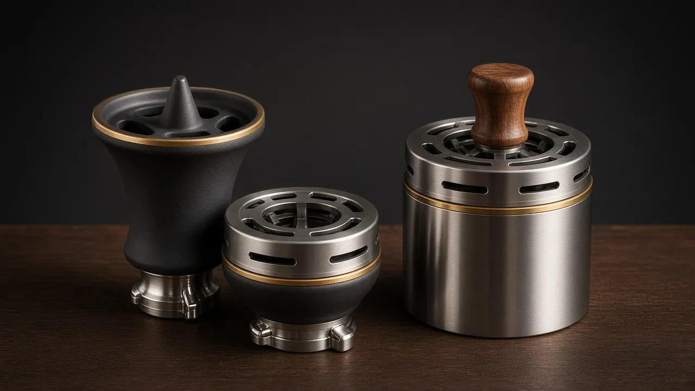
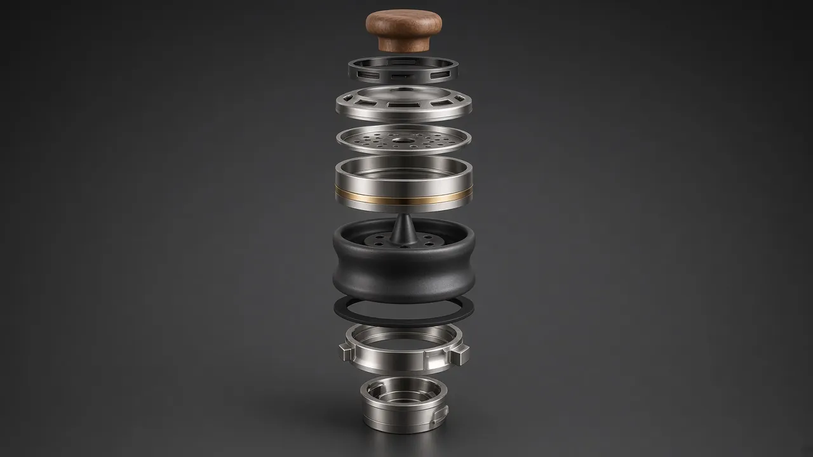

Smart HMD
Умная чаша, стандартная для всех моделей. Дополнительная или запасная головка; керамический нагреватель с ПИД-контролем.
Всё, что может разбиться, износиться или что вы хотите улучшить, продаётся отдельно. Все модели NARION используют один байонетный замок 45°; при выборе детали сверяйтесь с таблицей совместимости ниже.

Цены указаны там, где сайт их уже публикует; остальное — по запросу.
Умная чаша, стандартная для всех моделей. Дополнительная или запасная головка; керамический нагреватель с ПИД-контролем.
Фаннел-чаша из матовой чёрной керамики, созданная для NARION; байонетное основание 45° подходит ко всем моделям. Для классической подачи вместо Smart HMD.
Калауд из нержавеющей стали с регулируемым воздушным кольцом и ручкой из ореха. В паре с классической чашей NARION.
Форма и объём под модель; горло отшлифовано под байонетное кольцо 45°. Опциональная стеклянная альтернатива.
Кольцо из нержавеющей стали фиксируется на горле колбы; один профиль замка для колбы, корпуса, подноса и порта шланга.
Фторэластомерные кольца не впитывают аромат; замена раз в год.
Моющийся силиконовый шланг без запаха с байонетным наконечником.
Гигиенические силиконовые мундштуки (5 шт.) и металлические варианты.
Поднос из нержавейки под чашу; пепел и горячие детали не попадают на стол.
Наконечник шахты для тихой тяги.
Запасной литиевый аккумулятор, меняется без прерывания сессии.
Магнитная док-станция для Smart HMD.
Изображения деталей — дизайн-/продуктовые рендеры; серийные детали могут немного отличаться.
Чаша и калауд, созданные для NARION, для классической подачи без электроники. Основание чаши фиксируется в байонете 45° на любой модели; регулируемое воздушное кольцо калауда выравнивает жар. Цена по запросу.

Байонетный замок общий для всех 17 моделей. Комплект шланга и уплотнителей общий для KOZA · LADİN · MANOLYA; размеры моделей производственной программы уточняются.
| Модель | Классическая стеклянная колба | Байонетное кольцо 45° | Шланг и уплотнители | Стандартная чаша | Классическая чаша NARION | Калауд NARION |
|---|---|---|---|---|---|---|
| NARION KOZA | Отдельной колбы нет — окно корпуса из Tritan™ | ✓ Общий стандарт | ✓ Общий комплект | Smart HMD (стандарт) | ✓ Байонет 45° | ✓ С классической чашей |
| NARION LADİN | Стеклянная колба — 850 мл | ✓ Общий стандарт | ✓ Общий комплект | Smart HMD (стандарт) | ✓ Байонет 45° | ✓ С классической чашей |
| NARION MANOLYA | Стеклянная колба — 800 мл | ✓ Общий стандарт | ✓ Общий комплект | Smart HMD (стандарт) | ✓ Байонет 45° | ✓ С классической чашей |
| NARION SERVİпроизводственная программа | Стеклянная колба — 950 мл | ✓ Общий стандарт | Уточняется | Smart HMD (стандарт) | ✓ Байонет 45° | ✓ С классической чашей |
| NARION PRİZMAпроизводственная программа | Стеклянная колба — 700 мл | ✓ Общий стандарт | Уточняется | Smart HMD (стандарт) | ✓ Байонет 45° | ✓ С классической чашей |
| NARION OCAKпроизводственная программа | Стеклянная колба — 750 мл | ✓ Общий стандарт | Уточняется | Smart HMD (стандарт) | ✓ Байонет 45° | ✓ С классической чашей |
| NARION FENERпроизводственная программа | Стеклянная колба — 750 мл | ✓ Общий стандарт | Уточняется | Smart HMD (стандарт) | ✓ Байонет 45° | ✓ С классической чашей |
| NARION NOMADпроизводственная программа | Стеклянная колба — 450 мл | ✓ Общий стандарт | Уточняется | Smart HMD (стандарт) | ✓ Байонет 45° | ✓ С классической чашей |
| NARION AURAпроизводственная программа | Стеклянная колба — 850 мл | ✓ Общий стандарт | Уточняется | Smart HMD (стандарт) | ✓ Байонет 45° | ✓ С классической чашей |
| NARION MONOLİTпроизводственная программа | Стеклянная колба — 800 мл | ✓ Общий стандарт | Уточняется | Smart HMD (стандарт) | ✓ Байонет 45° | ✓ С классической чашей |
| NARION İNCİпроизводственная программа | Стеклянная колба — 700 мл | ✓ Общий стандарт | Уточняется | Smart HMD (стандарт) | ✓ Байонет 45° | ✓ С классической чашей |
| NARION YALINпроизводственная программа | Стеклянная колба — 750 мл | ✓ Общий стандарт | Уточняется | Smart HMD (стандарт) | ✓ Байонет 45° | ✓ С классической чашей |
| NARION ZEYTİNпроизводственная программа | Стеклянная колба — 650 мл | ✓ Общий стандарт | Уточняется | Smart HMD (стандарт) | ✓ Байонет 45° | ✓ С классической чашей |
| NARION ARDIÇпроизводственная программа | Стеклянная колба — 700 мл | ✓ Общий стандарт | Уточняется | Smart HMD (стандарт) | ✓ Байонет 45° | ✓ С классической чашей |
| NARION KEMERпроизводственная программа | Стеклянная колба — 750 мл | ✓ Общий стандарт | Уточняется | Smart HMD (стандарт) | ✓ Байонет 45° | ✓ С классической чашей |
| NARION YÖRÜNGEпроизводственная программа | Стеклянная колба — 700 мл | ✓ Общий стандарт | Уточняется | Smart HMD (стандарт) | ✓ Байонет 45° | ✓ С классической чашей |
| NARION ÇAKILпроизводственная программа | Стеклянная колба — 600 мл | ✓ Общий стандарт | Уточняется | Smart HMD (стандарт) | ✓ Байонет 45° | ✓ С классической чашей |
Примечание: продажа и доставка электронных деталей (Smart HMD, аккумулятор, док-станция) зависят от местного законодательства и уточняются при запросе.
Поскольку KOZA, LADİN и MANOLYA используют один байонетный стандарт, чаша, уплотнения и мундштук у всех трёх — одна и та же деталь. Даже если в кафе стоят все три модели, склад остаётся один, а заказать не ту деталь становится невозможно.
Ниже приведены целевые розничные цены. Дилерский прайс-лист и объёмные ступени предоставляются по запросу после подписания соглашения о неразглашении.
| Деталь | Целевая розница | Совместимость |
|---|---|---|
| Запасная колба — Tritan | 39 $ | LADİN и MANOLYA (у KOZA корпус без стекла) |
| Запасная чаша — кордиерит | 19 $ | Одинаково во всех трёх моделях |
| Запасной мундштук — силикон | 29 $ | Одинаково во всех трёх моделях |
| Набор уплотнительных колец FKM | По запросу | Одинаково во всех трёх моделях |
| Силиконовые наконечники (5 шт.) | По запросу | Для конкретной модели |
| Насадка-диффузор | По запросу | Для конкретной модели |
| На классическом кальяне | На NARION | Почему |
|---|---|---|
| Бой стеклянной колбы | Исключено из конструкции | Колба Tritan ударопрочна: вместо боя стоит ожидать царапин. |
| Трещины глиняной чаши | Исключено из конструкции | Во всех моделях стандартная чаша — умная NARION Smart HMD; ни глиняной чаши, ни угля. Для любителей классики запасная чаша выполнена из технической кордиеритовой керамики. |
| Отказ клапана | Исключено из конструкции | Шарикового клапана нет; мембрана снимается и моется. |
| Срыв резьбы | Исключено из конструкции | Резьбовых соединений нет; байонет запирается одним движением на 45°. |
| Старение уплотнений | Плановая замена | Кольцо FKM — недорогой расходник; менять рекомендуется раз в год. |
Поворот на 45° — и замок закрыт. Без резьбы и её срыва.
Одни и те же кольца, уплотнители и адаптеры на всех моделях.
Если колба разбилась, металлическое кольцо используется снова; меняется только стекло.